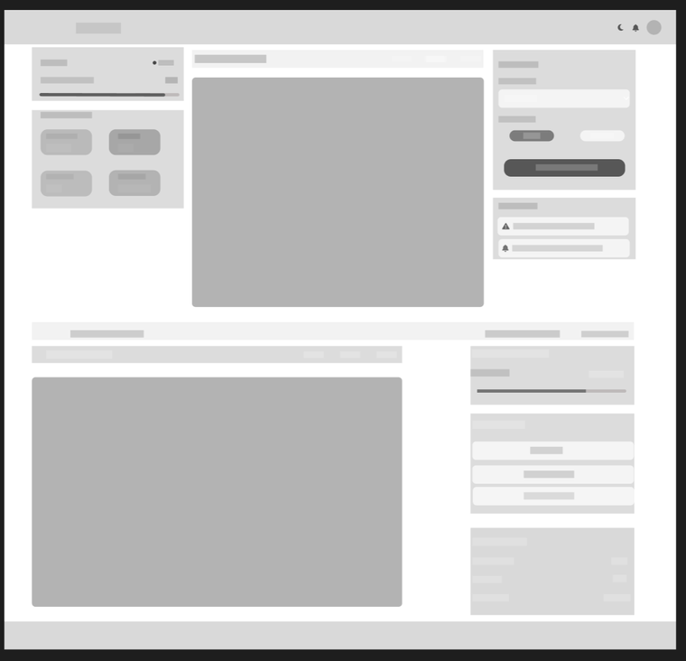
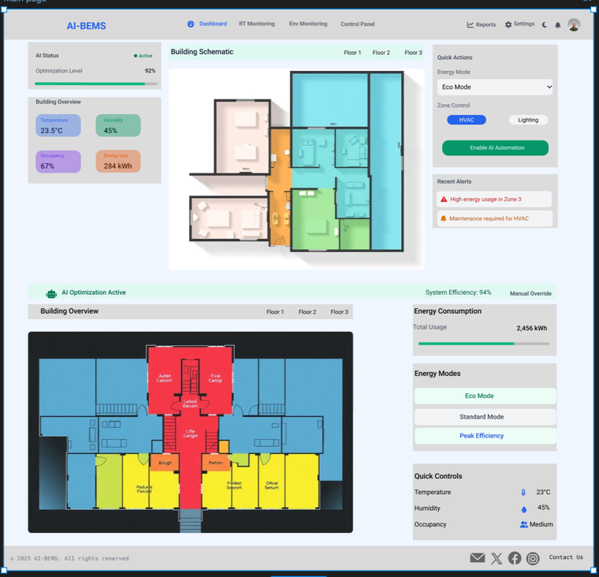
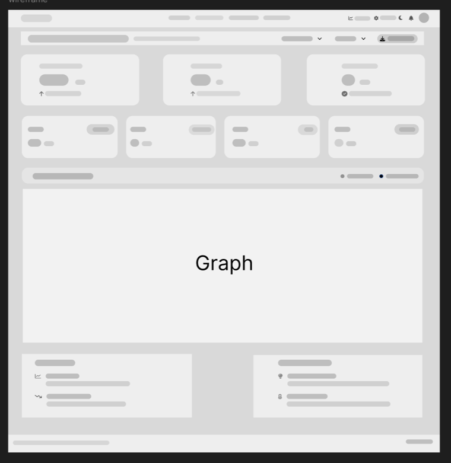
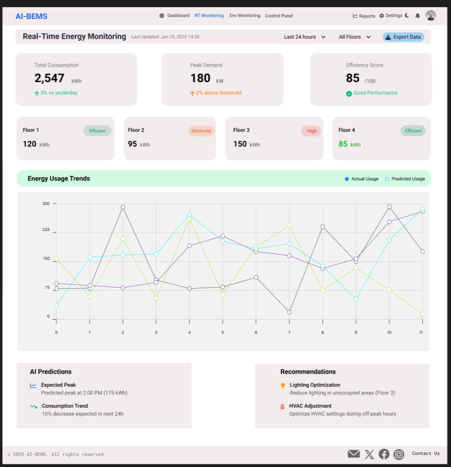
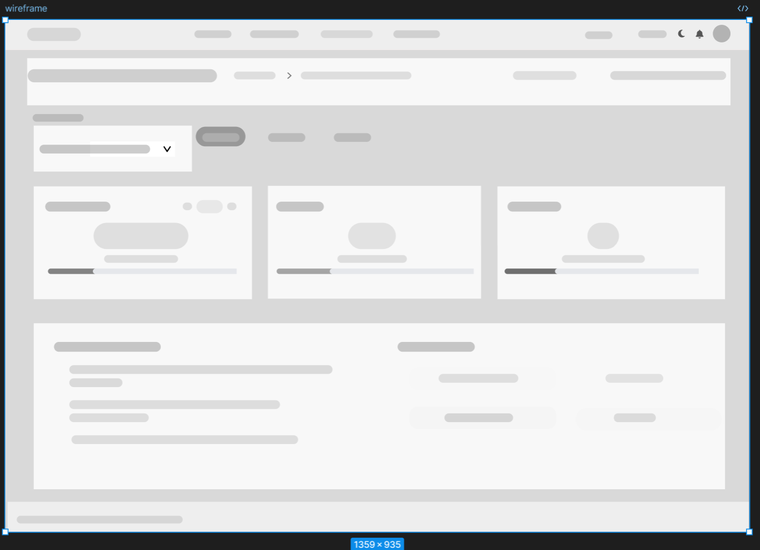
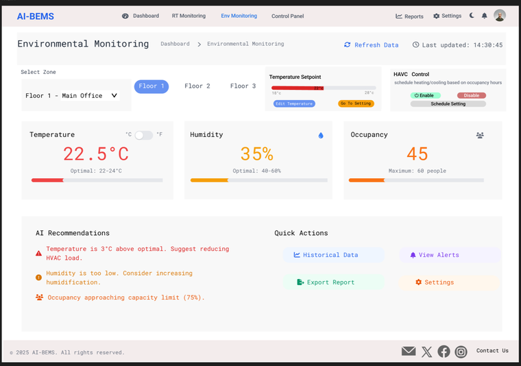
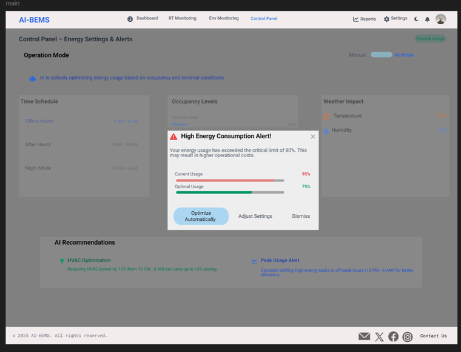

AI-Driven Building Energy Management System
Designing an ergonomic control-room dashboard so building managers can act on AI energy predictions with confidence, not confusion.
System overview
The AI-BEMS is a proposed dashboard for a Building Energy Management System that uses AI to optimize HVAC and lighting in commercial buildings. Sensors and IoT devices track temperature, humidity and occupancy; a data acquisition module combines that with external data like weather forecasts; an AI processing unit forecasts energy demand and recommends optimizations; and a control interface carries those recommendations out, while a user dashboard gives building managers visibility and manual override.
The goal was to lower operating costs and reduce a building's carbon footprint by reacting to real-time conditions, while keeping the humans who run the building in control of, and confident in, what the AI is doing.
What happens if it fails
I treated failure modes as a design input rather than an afterthought: a malfunctioning AI-BEMS can drive up energy use, make occupants uncomfortable, cause system downtime, or produce bad decisions from inaccurate sensor data. That risk is why the dashboard needs to make system status and confidence visible at a glance, and why manual override always needs to be one click away.
Ergonomics research
Ergonomics (human factors engineering) is the discipline of designing tasks, tools, displays and environments around people's physical and cognitive capabilities, to reduce error and discomfort. I used it as the lens for reviewing what an AI-BEMS asks of the people who operate it, and found six recurring risk areas, each with a design response:
| Risk | Design response |
|---|---|
| Interface complexity | A non-intuitive interface raises cognitive load and operator error. Response: a clean, simply laid-out dashboard, shaped by early feedback against operators' actual workflows. |
| Alert fatigue | Too many low-value alerts train operators to ignore all of them. Response: prioritized, adaptive alerts that surface only what's actionable. |
| Physical workspace | Poor control-room ergonomics causes discomfort and strain. Response: this sits outside the screen design itself, but the dashboard assumes adjustable seating and monitor height as a baseline. |
| Training and adoption | Operators can resist or mistrust a system they weren't trained on. Response: the interface favors plain language and familiar layouts over technical AI jargon. |
| Data privacy | Occupancy and behavior data is sensitive. Response: clear data-use communication and secure handling, treated as a design requirement, not just a policy footnote. |
| Legal liability | Inaccurate AI decisions can create safety or cost exposure. Response: the dashboard logs performance and maintenance activity so decisions stay auditable. |
Problem statement
Building managers need a way to trust and act on an AI's energy recommendations in real time, because the research above shows that when an automated system's status, confidence and controls aren't visible enough, operators either over-trust it (and miss failures) or under-trust it (and ignore genuinely useful recommendations). The dashboard has to make the AI's reasoning and the manual override equally visible, at all times.
Visual design system
I set technical standards before designing screens, so the visual language would stay consistent across dashboard, alerts and controls.
| Role | Colour | Use |
|---|---|---|
| Primary | Dark teal #004D40 | Main UI, navigation |
| Secondary | Earthy gold #C4A000 | Highlights, status indicators |
| Accent | Crimson red #D32F2F | Warnings, alerts |
| Background | Soft ivory #FAF3E0 | Dashboard and panels |
| Text | Slate gray #4E4E4E | Readability and contrast |
Typography is Roboto throughout: 20 to 26px for headings, 14 to 18px for body text, 12px for labels. Buttons use dark teal (primary) or earthy gold (secondary) with white text; alerts step from gold (info) to crimson (warning) to deep maroon (error), so severity reads at a glance.
Wireframes & prototypes
Four screens carry the system end to end: the main dashboard, real-time energy monitoring, environmental controls, and a critical alert.
Main dashboard
The central view: a building schematic alongside real-time energy, occupancy, temperature and humidity by floor, with quick access to mode selection, zone control and AI automation toggles.


Real-time energy monitoring
Energy use in kWh with a day-over-day comparison, threshold warnings against peak demand, and AI-generated efficiency scores, trends and recommendations by floor.


Environmental monitoring & controls
Lets a manager adjust temperature setpoints and HVAC scheduling by zone, toggle automation on or off, and see AI recommendations for ideal conditions.


Critical energy warning
A pop-up that fires when a monitored value crosses a critical threshold, for example energy use above 80% of capacity, with one-tap options to dismiss, auto-optimize, or adjust settings directly, plus an AI recommendation for what caused it.

Evaluation approach
This was a course exercise in engineering-controls design, scoped around research and prototyping rather than a build with real building managers to test. So instead of a moderated usability test, I evaluated the design against the ergonomic risks identified above (interface complexity, alert fatigue, training, and so on) and against the technical standards I'd set, rather than against fabricated test results. The natural next step, noted below, is a moderated test with actual facility staff.
Final solution
The final dashboard concept keeps four screens working together: an overview for orientation, a monitoring view for trend analysis, a controls view for direct adjustment, and an alert layer that interrupts only when a threshold is actually crossed. The dark teal and soft ivory palette keeps the dashboard calm during normal operation, so the crimson alert state stands out precisely when it should.
Reflection & lessons learned
Take home message:
Care needs to be taken in implementing an AI-based system, from UI complexity and alert fatigue to physical workspace, training, data privacy and legal liabilities.
Intuitive user interfaces and intelligent alerting systems reduce operator errors, cognitive load and prevent users from missing vital alerts.
Maintaining good data governance, anonymization and system audits are crucial in addressing data privacy concerns and reducing the legal risks that could stem from AI failures.
Design brief
Goals and target audience
Give building managers and energy managers a dashboard that lets them lower operating costs and carbon footprint through AI optimization, without losing visibility or control over the building's systems.
Rationale for key UI decisions
Dark teal and soft ivory were chosen to keep the dashboard calm at rest, so that gold highlights and crimson alerts carry real meaning instead of competing with routine data. Roboto and a tight 3-tier type scale (20 to 26px headings, 14 to 18px body, 12px labels) keep dense operational data readable at a glance.
Accessibility and ergonomic considerations
The design responds directly to the six ergonomic risks above: a simplified interface to reduce cognitive load, prioritized alerts to avoid alert fatigue, plain language over AI jargon to ease training and adoption, and an always-visible manual override for legal and safety accountability.
Key lesson learned
Creating AI systems for buildings necessitates creating intuitive interfaces, highly effective alert prioritization, and strong data privacy rules to beat operator fatigue and security dangers.